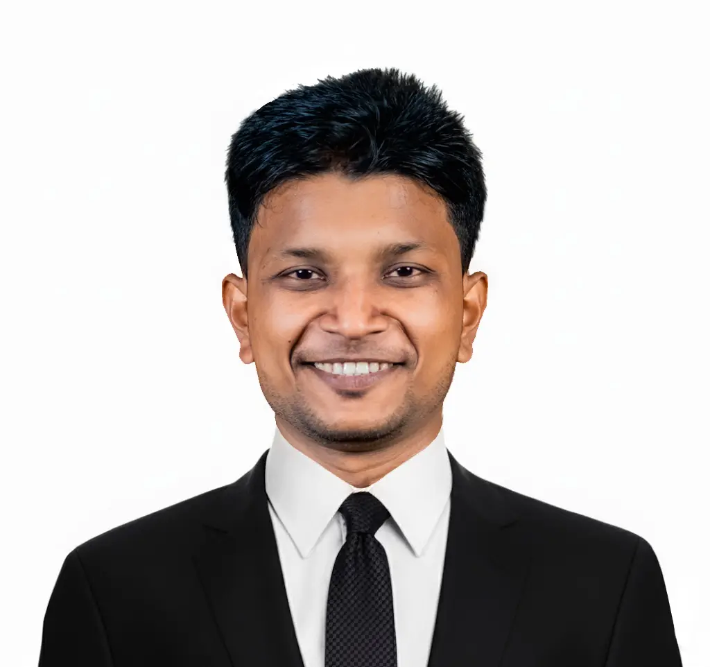
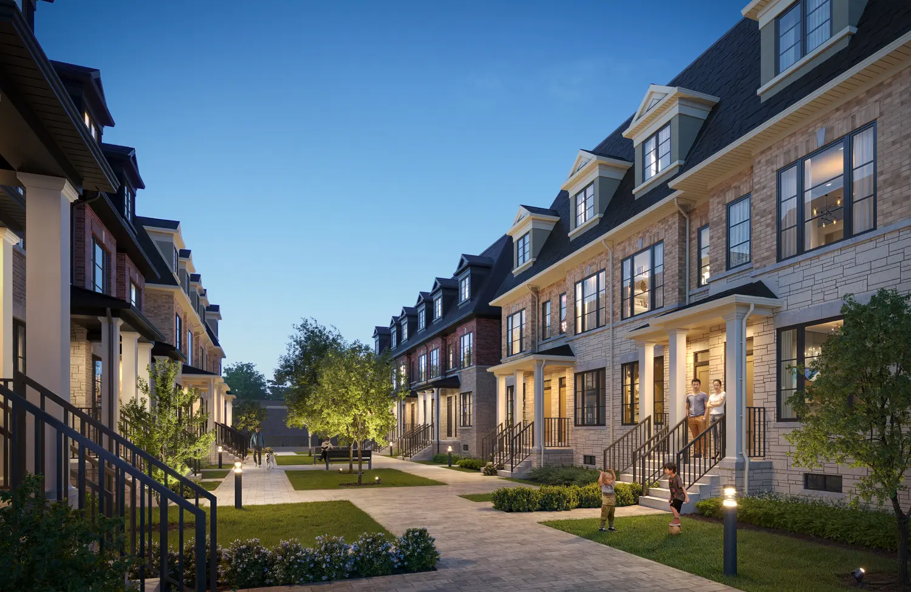
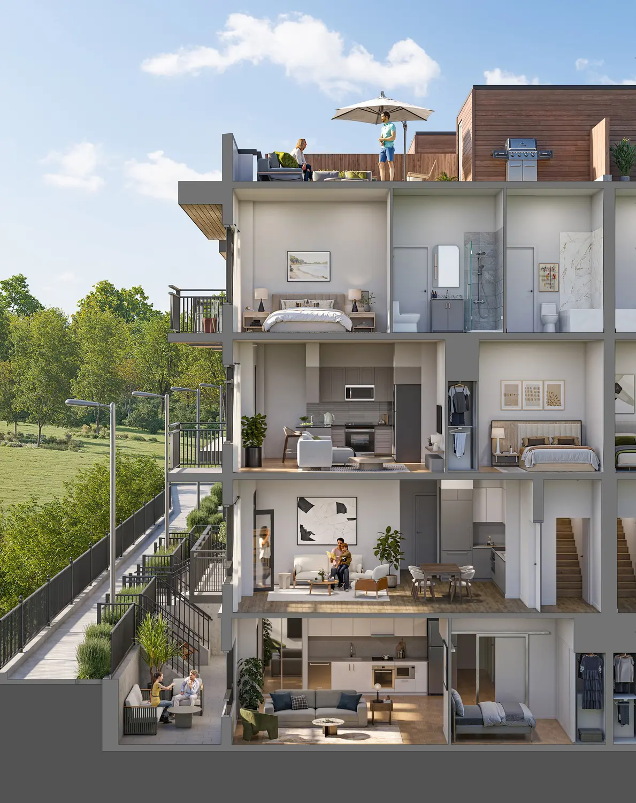
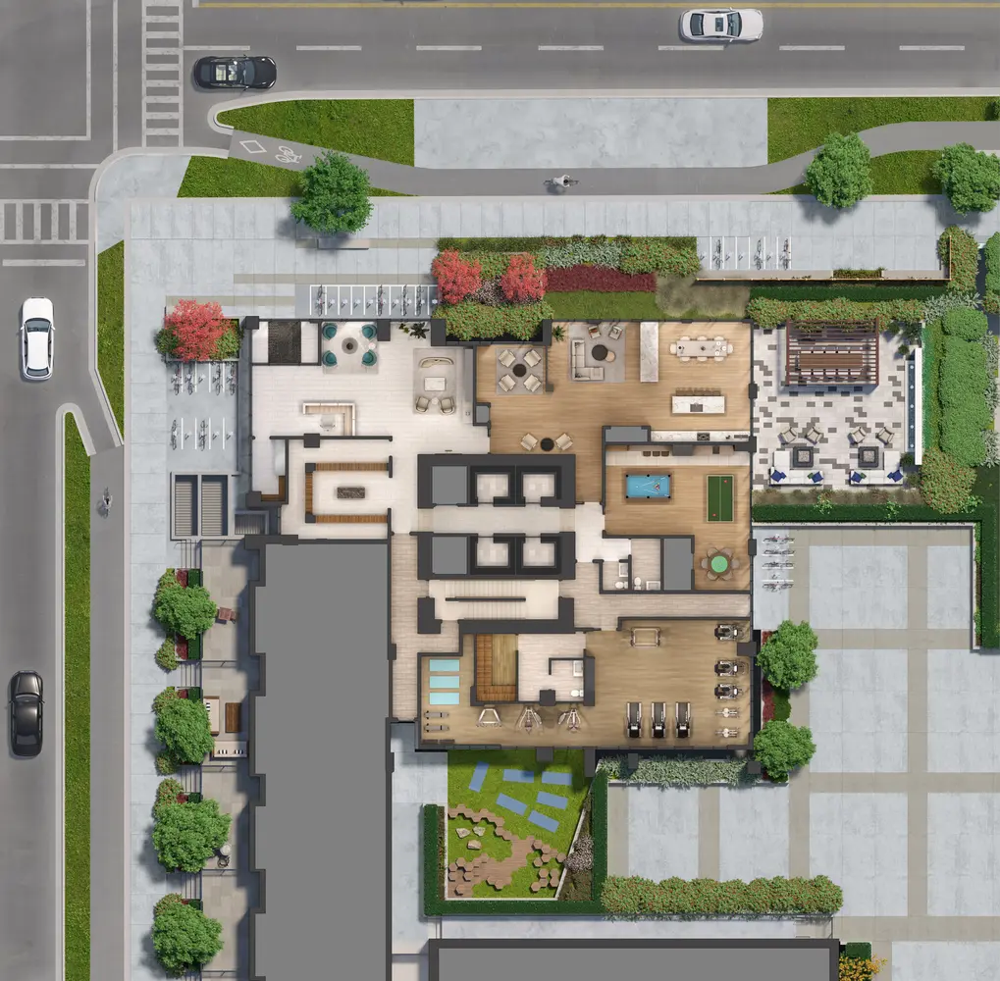
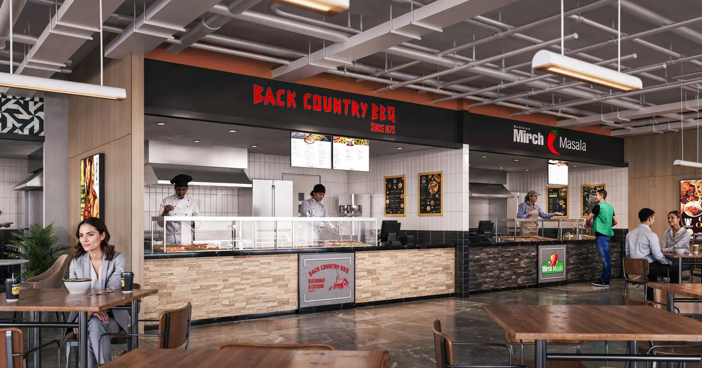
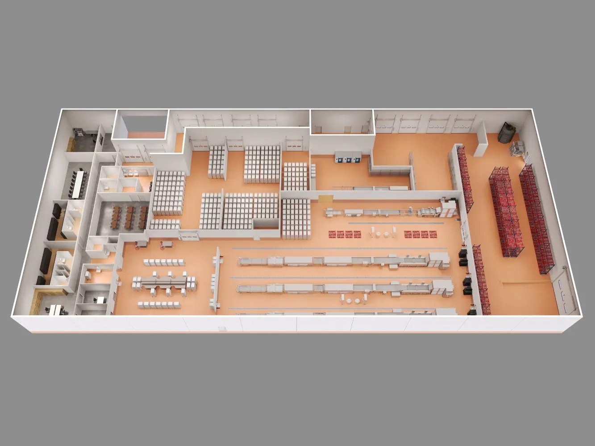
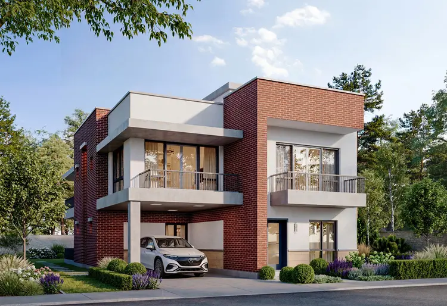
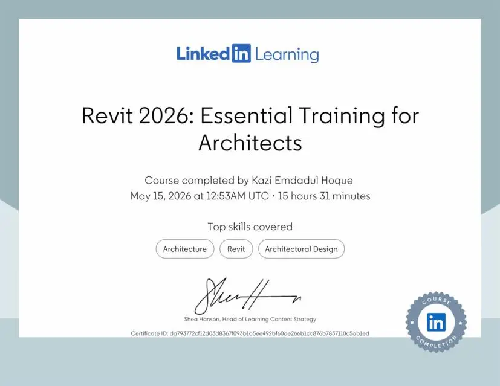
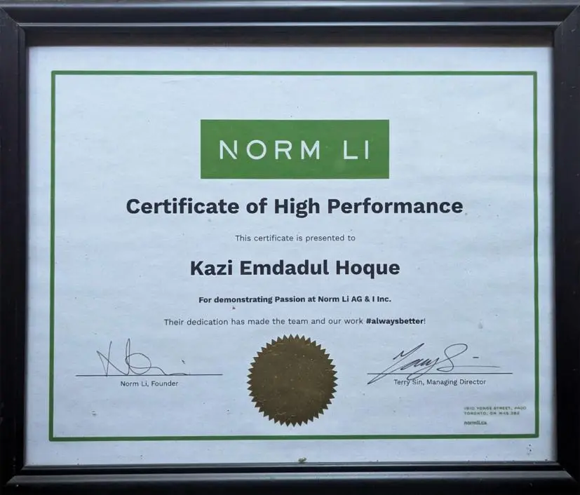

Languages
Bengali NativeEnglish B2German A2

BASED IN GERMANY
Transforming architectural drawings and ideas into clear, compelling and production-ready visual experiences.
Let’s create something meaningful.
ABOUT ME
I have more than six years of professional experience creating photorealistic visualizations for residential, commercial and mixed-use projects. My work spans architectural modelling, interior and exterior rendering, 3D floor plans, VR visualization and animation.
I manage the complete workflow—from CAD drawings, PDFs and sketches to modelling, materials, lighting, camera setup, rendering and post-production. I also supported and trained new team members in professional production environments.
Now pursuing an M.Sc. in Infrastructure Planning at the University of Stuttgart, I am building deeper competence in Revit, BIM and the planning of the built environment.
MY JOURNEY
A career shaped by technical learning, visual craftsmanship and a drive to understand projects from concept through communication and delivery.
EDUCATION
Urban and regional planning, transport planning and infrastructure, and project planning.
Structural design and analysis, roads and railway infrastructure, geotechnical studies, and project planning and management.
Architectural drawing, planning, interior design, AutoCAD, 3D visualization and building materials.
PROFESSIONAL EXPERIENCE
SELECTED PROJECTS

Photorealistic exterior visualization developed from architectural drawings through modelling, lighting, materials, rendering and post-production.

Sectioned architectural dollhouse visualization communicating spatial relationships, interior character and the complete building composition.

A detailed plan visualization combining architectural accuracy with landscape, materials and readable spatial hierarchy.

Interior design visualization exploring commercial atmosphere, material balance, lighting and operational character.

A detailed warehouse and production-facility visualization communicating functional zoning, equipment layout, storage systems and operational circulation.

A 504 m² study connecting concept sketch, AutoCAD drafting, Revit modelling, documentation and final visualization.
CERTIFICATES

LinkedIn Learning · Course by Paul F. Aubin · 15 hours 31 minutes
View certificate ↗
Norm Li · Awarded to Kazi Emdadul Hoque for demonstrating passion, dedication and high-quality work.
View certificate ↗GET IN TOUCH